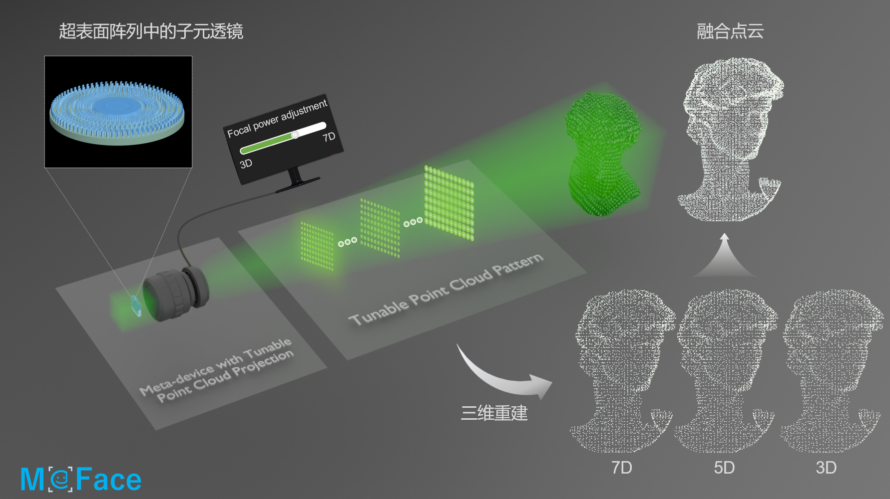
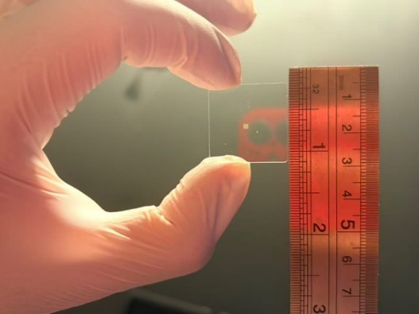
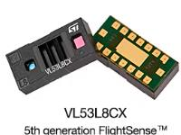
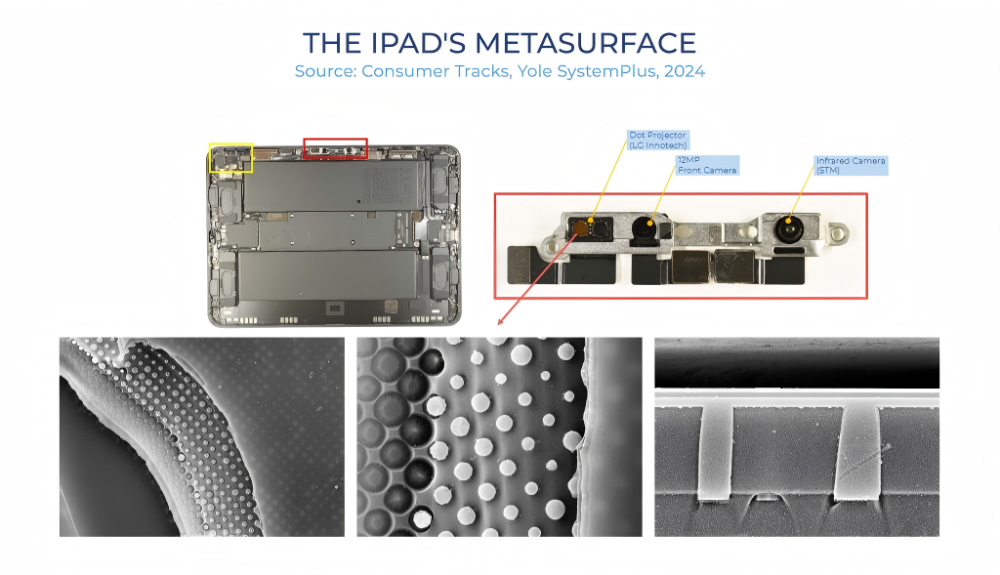

HK Tech 300 种子基金 · HKSTP Ideation
以超表面光学
定义下一代3D感知
MetaOptix 致力于将纳米光子学前沿技术转化为极致微型化的3D人脸识别核心模组。 MeFace — 比传统方案薄 90%，成本降低 30%，让高安全3D感知从旗舰走向普惠。
📱 智能手机
🥽 AR / VR
👓 AI 眼镜
🔐 智能门锁
⌚ IoT 设备
0 μm
核心器件厚度
0%
模组体积缩小
0%
BOM 成本降低
0%
DOE 芯片降本幅度
核心价值
芯片级超表面光学
让 3D 安全感知触手可及
MeFace 以一片超薄 Meta-DOE 芯片替代传统厚重的多层光学镜组， 在极致微型化与高精度感知之间实现前所未有的平衡。
🔬
极致微型化
核心超表面器件厚度控制在 400μm 级别，比传统方案缩小 90%，完美适配屏下识别、AR/AI 眼镜等空间受限场景。
🛡️
硬件级安全防伪
基于真实 3D 几何信息的活体检测，从底层硬件逻辑上彻底杜绝照片、屏幕重放等 2D 攻击手段，达到金融级安全标准。
⚡
低功耗·易集成
简化光学堆叠降低光源驱动需求，显著改善热耗散与续航表现；标准化硬件+SDK+算法一体化交付，加速客户产品上市。
🏭
半导体级可制造性
采用与半导体工艺兼容的 DUV 光刻与刻蚀路线，深度兼容 8/12 英寸代工产线，从晶圆级实现高一致性与规模化降本。
产品预览
MeFace 超表面 3D 人脸识别模组
技术路线与 iPhone 17 超表面方案接近，微型化程度与成本控制更具优势

图：MeFace 产品工作原理 — 超表面阵列调控光场生成可调密度的伪随机结构光点阵，实现高精度三维重建

图：MeFace 超表面核心器件及微型化示意 — 模组厚度 < 400 μm
图：超表面的扫描电子显微镜（SEM）图 — 纳米柱阵列结构
行业趋势
科技巨头已选择超表面路线
苹果、三星在其最新设备中大规模推广超表面光学技术，验证了产业方向

图：三星 2023 年在 Galaxy S23 Ultra 中率先采用 Metalenz 超表面 ToF 传感器

图：苹果 2024 年在 iPad Pro M4 中首次运用超表面技术降低 3D 视觉模组体积与成本
2025 年 iPhone 17 全面推广超表面技术至所有手机前摄 → MetaOptix 以同等技术路线服务国产供应链